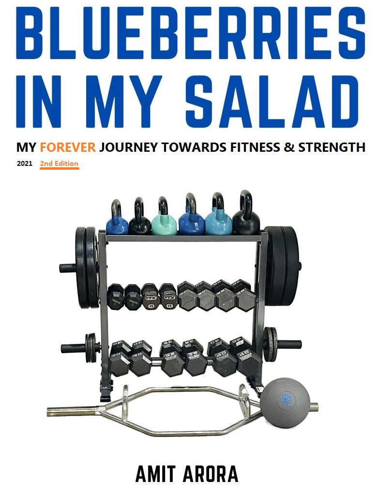

Blueberries in My Salad
December 2021
Chapter 1 Preface to the updated 2nd edition

I would not say that I wrote the first edition of this book (also, my first book) on a whim, but even so, it wasn’t something that was a part of my new years resolutions either. Well, it was the year of our Lord 2020 after all, between Amazon running out of podcast microphones and peacocks being sighted in the streets, anything was possible. A person like me who had been overweight and unfit most of their adult life suddenly writing a book on health and fitness, why not?
Since the 9 months or so that have elapsed between the first edition getting self-published and me starting work on the second edition, a few things happened. Firstly, I met several people, some close friends, some acquaintances and some complete strangers who told me how much they enjoyed reading the book, that it was useful for them in their own fitness journey and also they were curious if we eventually did reach our fitness goals (the first edition ends with me and my wife being about three quarters of the way there). I did reach my fitness goals both in terms of my body weight and deadlift target, so right there, there was a sequel to the first book waiting to be written. Secondly, I realized what a great learning and personal growth it was for me to actually put down all our experiences on paper and understand that it is one thing to hold your own in a conversation at a dinner party and a totally different thing to string together cogent and coherent sentences in a book. Finally, I learn and remember by writing (or typing). As they say one good habit begets another, I started reading and learning more and more, incorporating in my own life what I could about overall wellness, longevity, nutrition and other aspects of human health. I felt I should write what I learnt.
I am far from being an expert and certainly would not suggest to anyone to begin on this journey without proper guidance, but it is, after all, a voyage of self-discovery. This book is a travelogue of my midlife journey through the hills and valleys of health and fitness, discovering new (to me) vistas and realizing truths that now appear self-evident. Perhaps the most important truth that I learnt was that a choice between work and workout is a false binary. There is no work (as in a job, business, studies) without a workout. While it is mind over matter, always, but our physical body is also a tool to control the mind. A good workout does more for the mind than for the body, having experienced that over and over again, I just cannot stress that enough. A good session of strength training is about as perfect a start to a day that you can ask for, it sets you up for success, give it a chance!
This edition of the book covers several new and important topics, such as “breathwork”, “water fasting”, “proteins & carbs”, and also a topic that has applicability even outside of fitness and strength: “consistency rather than intensity, the power of showing up every day”.
When I started my journey, I was not sure of how long would it last. Actually, I never thought about it in terms of a start and a finish, I did not think much of anything except that this was a good road to travel. Most people I knew thought about health in terms of a single metric: body weight. People spoke in terms of “oh, I need to lose 10 pounds”, “I need to get rid of belly fat” and so on, no one and I mean literally no one that I knew of spoke in terms of “I want to have more energy”, “I want to sleep better”, “I want better physical fitness that helps me become better at whatever I do”. So when I started, my focus was also, not surprisingly, body weight, but over time I realized, body weight was just one metric, an important one, but still one of several. A healthy mind lives in a healthy body, and a healthy body takes consistent effort, day after day, week after week, month after month. Unless you have hit a genetic lottery and are just born with great metabolism there is a lot of work to put in (I would in fact argue that if you have hit the genetic lottery you have an obligation to maintain it). But a healthy lifestyle does not have to be a chore, people often get disappointed to hear that health is not a quick fix, the 10 pounds that they want to lose will come back once they go back to their old eating habits. Life long changes require life long efforts, and I would even question, why should it be any other way? There is a great amount of satisfaction and feeling of self worth to be derived from looking back and reflecting “Yes, I really did this, not as a one time quick fix solution, but as something that I was able to sustain!”. What drives me is not just some goal that I decided to set up for myself but the experience, the blood, sweat and tears (metaphorically speaking) in the pursuit of the goal. Goals are important (a 400lb deadlift, completing the murph challenge in under 35 minutes, doing the Exorcist stairs at Georgetown 10 times up and down, being able to run for 15 miles, many more) but those are more like milestones on a highway rather than a destination to get to. As long as I am making progress, howsoever small, even if it is two steps forward and one step backwards, it is all good. Fitness is an infinite game, the objective is to play the game for as long as possible and that can only happen by enjoying the journey and being proud of the effort.
For most of 2020 and early part of 2021, social interactions were severely curtailed because of Covid. As we started seeing people, it was interesting and encouraging to see that the reactions I got from people changed from “how are you losing so much weight?” to “you look athletic!” or “you look strong!”. When someone praises you, it invariably creates a dopamine rush that drives you to keep up the good work. Whether it is an Instagram like or a compliment on your physical fitness, the physiological processes involved are the same, but I would argue getting the dopamine rush via someone saying nice things because you are a transformed person is probably not so bad! Just to be clear, I don’t mind the Instagram likes at all. I put a lot of fitness content on my Instagram @ilivethedata primarily to chronicle my workout progress but also to maybe give hope to some random person (which would be me 2 years ago) scrolling through their Instagram feed and thinking “if he can, then why can’t I?”. It is always nice to see how far down that road I have traveled from being the clumsy person who could barely do a squat to someone who now regularly does a 150lb barbell squat.
A word about data, we kept up with the practice of collecting weight and other biometrics every day and that has been invaluable. I would have liked to have better tracking for all of our exercises, but did not find an app which did quite what I wanted. Started creating my own app for tracking workouts, but with my day job, I could either find time to work on the app or write this book, I choose this book :). Hopefully, the app will also be available in the not too distant future. The charts and tables in this book are all generated using R and gpplot2, please see this github repo to find the latest data. This book is rendered using the wonderful bookdown package, very thankful for it.
As all good books should, this book too has a website now. Please see blueberriesinmysalad.com. The website tracks our journey as it continues, has updates on what are the latest topics in health and fitness that I am currently learning about and maybe a monthly newsletter as well in the future.
Finally, to the one person who sent me screenshots of underlined passages of the first edition of this book with questions written on the margin, thank you for the encouragement :), please look for a signed copy of this new edition in the mail!
Amit Arora
Clarksburg, Maryland
PS: I never thought that people would read my book by borrowing it from a friend, who in turn borrowed it from another friend :), but that did happen. To those friends, I say, I see you :) and this time please have at least two friends buy the book and I will be happy to sign a copy for you.